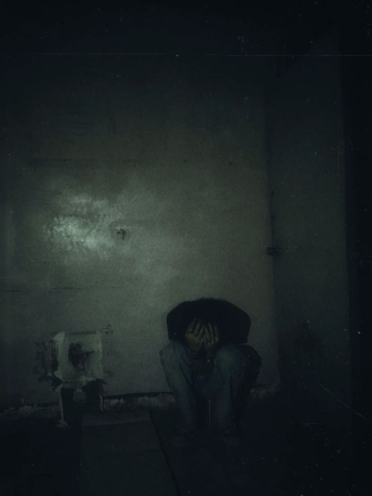

O Fracasso
Fantasia de Halloween — Wendel Risse
Origem
Sempre ouvi que o Halloween era uma maneira de expressar seus medos. Ano passado, eu fui de "Enem", pois era um medo pertinente até então.
Porém, hoje, o Enem já não me causa medo. É o que vem após que é o real problema: o fracasso.
Ele vem desde os primórdios das civilizações, consumindo a vida de muitos e rompendo sociedades. É o medo de ver que tudo se desmoronou e, junto disso, se sentir insuficiente.
A ampulheta quebrada
Todos os seus sonhos estão presos num pote que precisará de muito esforço para ser aberto.
O tempo já acabou, e não existe nada que você possa fazer para contornar esse sentimento.
Assim como Clarice Lispector disse em Felicidade Clandestina, é se olhar no espelho com 50 e poucos anos e perceber que você viveu uma vida miserável e infeliz.
Garganta
Sua trajetória não se restringe ao meio físico. São frases que vão te consumindo de dentro pra fora.
Elas sobem rumo à garganta, numa tentativa incessante de te ver enforcado num abismo profundo.